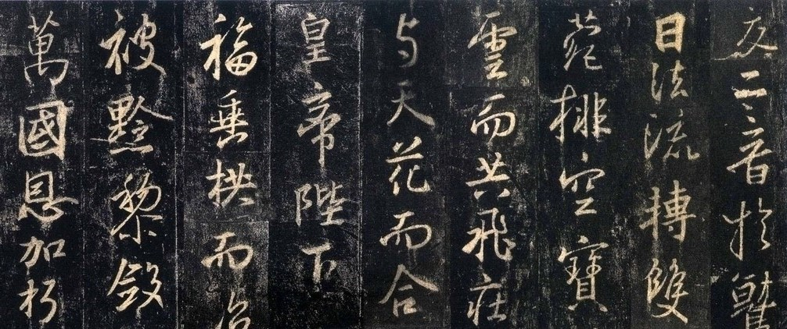

圣教序
2018-6-19
《大唐三藏圣教序》，简称《圣教序》，由唐太宗撰写。最早由唐初四大书法家之一的褚遂良所书，称为《雁塔圣教序》，后由沙门怀仁从王羲之书法中集字，刻制成碑文，称《唐集右军圣教序并记》，或《怀仁集王羲之书圣教序》，因碑首横刻有七尊佛像，又名《七佛圣教序》。集王圣教序碑刻立于唐咸亨三年(六七二)，碑通高三五零、宽一零八、厚二十八厘米。碑文三十行，行八十三至八十八字不等。
此碑为弘福寺沙门怀仁集晋右将军王羲之书，唐咸亨三年(公元672年)十二月八日京城法侣建立。文林郎诸葛神力勒石，武骑尉朱静藏镌字。行书，三十行，行八十三至八十八字不等。额刻七佛像。碑原在陕西西安弘福寺，后移西安碑林。集王圣教序记，较雁塔褚遂良正书本晚十九年，多文王答敕、皇太子笺答、又般若波罗蜜多心经。怀仁集王羲之书，历廿五年乃成。
《圣教序》虽是集字成碑，且缺失之字为拼接组合而成。但因怀仁功力精凿，又是谨慎从事，终能各尽其势，完好地再现了王羲之书法的艺术特征，用明人王世贞的话来说，是"备尽八法之妙"，成为王字的一个大宝库。此碑于宋以后中断，传世以未断宋拓本为佳，字迹稍肥，笔锋使转处莹丝可见。

王羲之笔法精绝，笔势遒劲，字里行间流露出"端庄杂流丽，刚健含婀娜"的韵致，确是后世学书者难以达到的境界。我们临习此帖，先应在反复读帖的过程中去领悟王字的法度，落笔之际，则应锤炼用笔工夫，在骨力上要能够体味其"峻骨""峻整"，特别要细参唐摹本《兰亭》，一下笔即要有筋、骨、血、脉、肉，其点画出入之迹要合乎笔势，由用笔而生字形，也就是说，从用笔的意态取势，着眼于点画、部首以及结构部件占领的空间位置，逐个将字临像、临熟，逐渐写出王字清朗俊逸、恬静洒脱的风神来。同时，必须明白，王羲之之所以能成功，一方面是他对书法技法的把握、运用已精熟到了"尽善尽美"的程度，另一方面，他寄情山林、恬淡儒雅的秉性，使他在挥运之际从未宥于法度，或者说在追求书法天趣的过程中，其技法从未受到法度的束缚。这对于一般的学书者来说，颇有启迪意义。因此，我们在刻苦钻研、学习王字技法之际，能凝神静气、放松心态是十分重要的。如何有分寸地掌握好二者之间的"度"，也是我们在学习过程中，须视自身情况加以解决的。
其次，"若断还连，如斜反正"，灵动变化的篇章构成，也是王羲之书法的重要特征。集字而成的《圣教序》，其章法布势已作了很大的调节，但终因不是一气写成的，故此间稍有缺憾，即某些字势连贯不够，行气不足。对此，我们可多多注意上下笔势的连贯，并参考如《兰亭序》《丧乱帖》《快雪时晴帖》等王字法帖，从中感悟、体味王书谋篇布局的要妙，就自然能窥得王字的真谛，进而把握王字整体风格。
集字而成的《圣教序》也不尽是羲之所书。按封建礼教，古人极重视避先人讳，其祖"王正"，"王旷"，"王恂"，如避"正"字，将"正月"写为"初月"等。《圣教序》虽说为羲之所书，但有"正"，"旷"等字，所以。这些字断然不是王羲之写的。